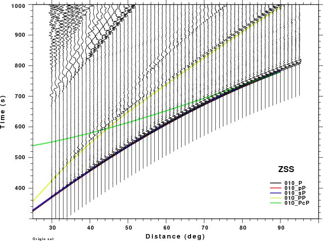
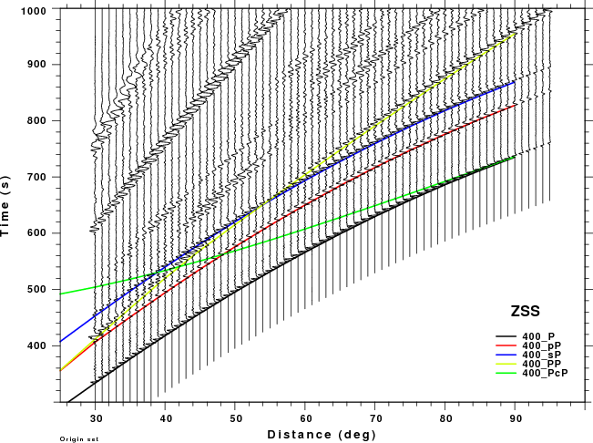

Travel time comparisons
The figures shown here are arranged horizontally by Green's function and vertically by depth. The depths are 1, 10, 40, 100, ...,700 km. In the figures, the legend that the bottom right of each figure gives the Green's function, a color code for the phase and an indication of the depth, e.g., 010_PcP is for a source depth of 10 km.
|  | ||
|  | ||
 |
Discussion
The following table attempts to summarize the information presented in these figures.
| Depth (km) | PcP | PP |
|---|---|---|
| 1 | no concern, low amplitude | No problem if processing window is lest than 50sec at short distance. |
| 10 | no concern, low amplitude | |
| 40 | no concern, low amplitude | |
| 100 | no concern, low amplitude | May be a problem for Δ < 35° |
| 200 | no concern, low amplitude | Problem Δ<40° |
| 300 | no concern, low amplitude | Problem Δ<50° |
| 400 | no concern, low amplitude | |
| 500 | no concern, low amplitude | Interesting. For ZSS strong interference with pP for Δ <50° and sP after 70° |
| 600 | no concern, low amplitude | PP interferes with pP as short distances and sP at larger distances. Significant for ZSS. |
| 700 | no concern, low amplitude | PP interferes with pP for Δ > 50° especially for ZSS |
Summary: At larger distances PP can interfere significantly with sP. At shorter distances PP may be a problem if the time window used for processing to too large.
Trace comparisons for different source durations
These plots focus on the time window that the Hudson synthetics adequately represent the teleseismic signal. The Hudson synthetics are compares to the full wavenumber integration synthetics for the ZDD, ZDS and ZSS Green's functions. These figures provide the basis for defining the distance range for which the Hudson synthetics are adequate, e.g., when the effect if PP does not distort the signal, as a function of source depth, epicentral distance and source duration.
There are four displays. The first is of the "high frequency" Green functions. This is misnomer, since the wavenumber integration synthetics have a sample interval of 1.0s, and their source function has a duration of 4s. The others have had the synthetics convolved with a triangular pulse of duration 5, 10 or 15s, to represent the signal expected for increasingly larger earthquakes, respectively.
- Record sections of Green's functions as a function of source depth.
- Record sections of Green's functions convolved with a 5 second triangle as a function of source depth
- Record sections of Green's functions convolved with a 10 second triangle as a function of source depth
- Record sections of Green's functions convolved with a 15 second triangle as a function of source depth
Discussion
These record sections provide a more detailed comparison of the WK and Hudson synthetic than was possible in the travel time plots above, whose primary purpose was to identify the PcP and PP phase on the synthetics. The expanded view in this section permits one to focus better on the appropriate distance range and on the signal interferences. The big problem for large depths is that the Hudson synthetics cannot model the PP phase which is strong on the ZDS and ZSS (vertical dip-slip nd vertical strike-slip sources, respectively). This interference might cause a "fuzziness" in the depth estimate.
True amplitude trace comparisons for different source durations
These plots focus on the amplitudes of the two types of synthetics. The previous figures scaled each trace to the same maximum amplitude on the plot. To examine the amplitude, a true amplitude plot is not presented since amplitudes differ with distance due to geometrical spreading and radiation pattern. Instead a correction for 1/distance(km) is made. This permits the amplitudes at a given epicentral distance to be compared.
The conclusion is that the initial amplitudes agree very well. Thus either set of synthetics could be used for quantitative source studies using the initial arrivals near P.
- True amplitude record sections of Green's functions as a function of source depth.
- True amplitude record sections of Green's functions convolved with a 5 second triangle as a function of source depth
- True amplitude record sections of Green's functions convolved with a 10 second triangle as a function of source depth
- True amplitude record sections of Green's functions convolved with a 15 second triangle as a function of source depth
Rules
The comparison of the Hudson synthetics to the complete synthetics shows that the interference of the P, pP and sP sequence of arrivals with PP is a major limitation of the method. The following table is an attempt to codify the use of the Hudson synthetics for determining source depth.
The criteria is simple. if the PP arrival occurs before the sP + Source_Duration time, then do not apply the technique. Implicit in the table is that data are not used at Δ < 30° to avoid the upper mantle triplication of P.
The source duration is a function of Mw. An approximate relation between the duration of the simple triangle function to moment magnitude is
Mw Duration(s)
5 1.5
6 5.0
7 15.0
8 50.0
The Mw=8 should never be used, since the simple triangular pulse cannot represent the expected signal of an large extended source. Thus there must be some upper magnitude bound on the use of this technique.
Source Duration 0.00000000 s H/G 30. 35. 40. 45. 50. 55. 60. 65. 70. 75. 80. 85. 90. 1. Y Y Y Y Y Y Y Y Y Y Y Y Y 10. Y Y Y Y Y Y Y Y Y Y Y Y Y 40. Y Y Y Y Y Y Y Y Y Y Y Y Y 100. Y Y Y Y Y Y Y Y Y Y Y Y Y 200. Y Y Y Y Y Y Y Y Y Y Y Y Y 300. - - Y Y Y Y Y Y Y Y Y Y Y 400. - - - - - Y Y Y Y Y Y Y Y 500. - - - - - - - - Y Y Y Y Y 600. - - - - - - - - - - Y Y Y 700. - - - - - - - - - - - - Y Source Duration 5.00000000 s H/G 30. 35. 40. 45. 50. 55. 60. 65. 70. 75. 80. 85. 90. 1. Y Y Y Y Y Y Y Y Y Y Y Y Y 10. Y Y Y Y Y Y Y Y Y Y Y Y Y 40. Y Y Y Y Y Y Y Y Y Y Y Y Y 100. Y Y Y Y Y Y Y Y Y Y Y Y Y 200. - Y Y Y Y Y Y Y Y Y Y Y Y 300. - - - Y Y Y Y Y Y Y Y Y Y 400. - - - - - - Y Y Y Y Y Y Y 500. - - - - - - - - Y Y Y Y Y 600. - - - - - - - - - - Y Y Y 700. - - - - - - - - - - - - Y Source Duration 10.0000000 s H/G 30. 35. 40. 45. 50. 55. 60. 65. 70. 75. 80. 85. 90. 1. Y Y Y Y Y Y Y Y Y Y Y Y Y 10. Y Y Y Y Y Y Y Y Y Y Y Y Y 40. Y Y Y Y Y Y Y Y Y Y Y Y Y 100. Y Y Y Y Y Y Y Y Y Y Y Y Y 200. - Y Y Y Y Y Y Y Y Y Y Y Y 300. - - - Y Y Y Y Y Y Y Y Y Y 400. - - - - - - Y Y Y Y Y Y Y 500. - - - - - - - - - Y Y Y Y 600. - - - - - - - - - - - Y Y 700. - - - - - - - - - - - - Y Source Duration 15.0000000 s H/G 30. 35. 40. 45. 50. 55. 60. 65. 70. 75. 80. 85. 90. 1. Y Y Y Y Y Y Y Y Y Y Y Y Y 10. Y Y Y Y Y Y Y Y Y Y Y Y Y 40. Y Y Y Y Y Y Y Y Y Y Y Y Y 100. Y Y Y Y Y Y Y Y Y Y Y Y Y 200. - Y Y Y Y Y Y Y Y Y Y Y Y 300. - - - Y Y Y Y Y Y Y Y Y Y 400. - - - - - - - Y Y Y Y Y Y 500. - - - - - - - - - Y Y Y Y 600. - - - - - - - - - - - Y Y 700. - - - - - - - - - - - - -